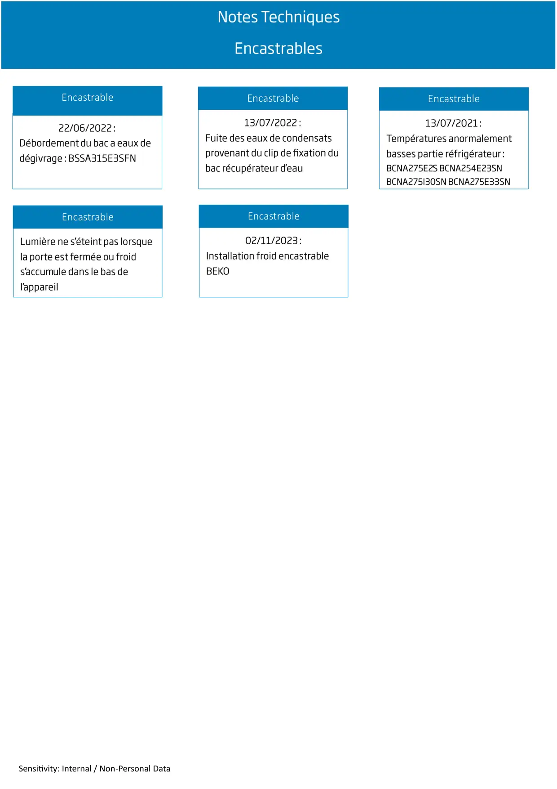

Infos techniques encastrables

Sensitivity: Internal / Non-Personal DataEncastrableEncastrableEncastrableEncastrableEncastrable
1 / 1


Gros électroménager
Ressources techniques SAV — Beko · Grundig · Whirlpool · Hotpoint · Indesit.
